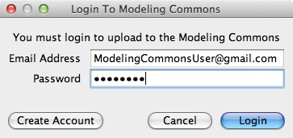
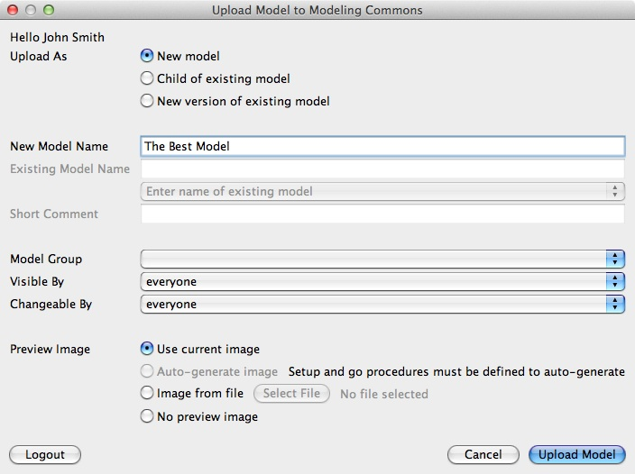
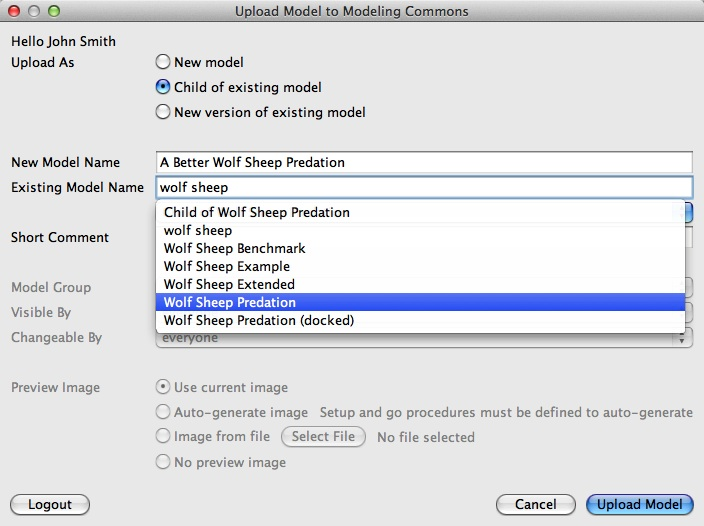

This section of the User Manual introduces the Modeling Commons model collaboration website and explain how to upload models to the Modeling Commons
Modeling Commons is a web application that makes it easy to share Netlogo models with other people as well as collaborate on those models with others. When you upload your model to the Modeling Commons, you make it accessible to a global community of other Netlogo users. You can run the models directly from your web browser without having to download them and run them from the Netlogo desktop application. Modeling Commons allows the community to discuss and ask questions about models. You can create projects to group together related models, and create groups of users to limit the ability to change your models to a class or group of trusted peers.
The Modeling Commons website can be found at http://modelingcommons.org
The save to Modeling Commons functionality allows you to upload models to the Modeling Commons website
directly from within Netlogo just like saving a .nlogo file, without having to go through
a web browser. You can access this feature by selecting 'Save to Modeling Commons' from the 'File' menu
underneath 'Save As'.

In order to upload models, you must register for an account on the Modeling Commons. When you click 'Save to Modeling Commons' from the file menu, you will be prompted to log in. If you already have a Modeling Commons account, simply enter your email address and password and press 'Login'. Once you are logged in, you will be prompted to upload a model. If you do not yet have a Modeling Commons account, you can either create one on the Modeling Commons website at http://modelingcommons.org/account/new. You can also create an account from within Netlogo.
From the log in dialog box, press 'Create Account'. To create a new account, you must enter your first and last name, email address, sex, country, and password. For statistical purposes, you may optionally enter your birthday. Additionally you may upload a profile picture that will appear next to your name when you upload models. While you are not required to upload a profile picture, you are highly recommended to do so. Finally, read through the user agreement. Once you have agreed to the user agreement and entered all information, press 'Create Account'. If there are no errors, you will be prompted to upload a model.
In addition to providing access to models online, the Modeling Commons allows you to fork or change existing models. You have 3 options to upload your model:

You must give your model a name. Model names are not required to be unique; you could have 2 or more models with the same name, though we recommend you don't do this.
You can also assign permissions to your new model to restrict access. By default, anyone can view, fork, and upload new versions of your model. You can restrict the ability to view and fork your model by changing the visibility permission. You can restrict the ability to upload new versions of your model without restricting the ability to view or fork your model by changing the changeability permission. If you want to restrict permissions to a group of people, you can assign your model to be a part of a group. Once your model is part of a group, you can restrict visibility or changeability permissions to that group only. Groups can be created from the Modeling Commons website at http://modelingcommons.org/account/groups#group_tabs_new_group . Once you have uploaded your model, you can edit the permissions from the model's Modeling Commons page.
You can optionally upload a preview image to your model. The preview image will be displayed alongside your model whenever it is shown on the Modeling Commons website. It serves as a visual representation of your model without having to run the entire model. While uploading a preview image is optional, we highly recommend that you do so. If you decide to upload a preview image, you have 3 ways to create an image.
If you select 'Use current image', the current view in Netlogo will be used as your preview image. We recommend that you set up your model to a point that visually shows off the key features.
If you select 'Auto-generate image', Netlogo will auto-generate a preview image by running
random-seed 0 setup repeat 75 [ go ]. This option will only be enabled if you have defined
setup and go procedures for Netlogo to run.
If you select 'Image from file' you can upload any image you create. Preview images work best when they are square.

The Modeling Commons allows you to fork models by uploading a child of an existing version of a model. To upload a new child, you must give your new model a name. Additionally, you must select an existing model to fork. To find an existing model, start typing the name of the model in Modeling Commons that you are looking for. If that model has been uploaded to the Modeling Commons, select the name in the combo box that pops up with the search results. You may fork any model that you have visibility permissions for. Finally, you must enter a description about what you are changing in your child model.
The Modeling Commons allows you to upload new versions of models you have created or that you have changeability permissions for. All previous versions are saved; you can revert to an old version from the model page on the Modeling Commons. You do not have to enter a new model name; the new version will retain the name of the previous version. To find an existing model, start typing the name of the model in Modeling Commons that you are looking for. If that model has been uploaded to the Modeling Commons, select the name in the combo box that pops up with the search results. Finally, you must enter a description about what you are changing in your new version.